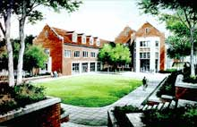

Department of
Computer Science
at The University of Tennessee

News
·
Admissions & Programs
·
Courses
·
Faculty
·
Research
·
CS Homepages
·
Publications
·
Resources
·
Employment
·
Contact Information | Maps
Claxton Access Information/Maps
Tenure-Track Faculty Opening
Information for:
Prospective Students
Undergraduate Students
Top 10 reasons to major in computer science
Computer science at UTK
What can I do with a CS degree?
Interesting statistics
Program and curriculum details
Honors Program
Example 4-year program
Campus Overview
Transfer Students
Undergraduate Transfer
Graduate Transfer
Graduate Students
Admissions
Assistantships
Stipend Information
University Fellowships
Program/Curriculum Details
Application Forms
Current Students
Undergraduate Students
Timetables
Programs/Curriculum Details
Example Program of Study
Course Description
Student Chapter of ACM
Undergraduate Catalog
Arts & Sciences Advising
Graduate Students
Timetables
Programs/Curriculum Details
Course Description
Graduate Committee Information
Graduate Catalog
Graduate School
Peers & Colleagues
Faculty Profiles
Faculty Research Expertise & Interest
Research Projects
Recent Faculty Awards
Publications
Departmental Staff
Industry
Faculty Profiles
Faculty Research Expertise & Interest
Departmental Staff
Student Résumés
Recent Facult Awards
Government Agencies
Faculty Profiles
Faculty Research Expertise & Interest
Departmental Staff
Student Résumés
Recent Facult Awards
Department of Computer Science · 203 Claxton Complex · Knoxville, Tennessee 37996-3450 · 865-974-5067